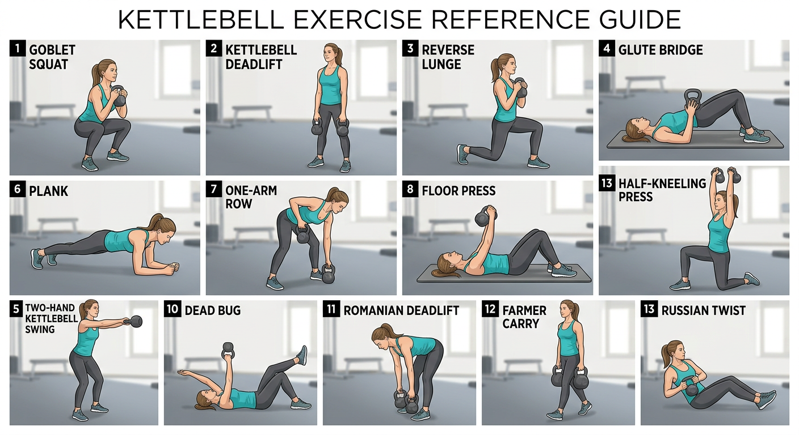

| 訓練日 | 動作 | 圖片 | 建議重量 | 組數 × 次數 | 休息 | 動作重點 |
|---|---|---|---|---|---|---|
| A 下肢 + 核心 | Goblet Squat 高腳杯深蹲 | 圖 1 | 8–12 kg | 3 × 10–12 | 60–90秒 | 壺鈴抱胸前，腰背挺直，膝頭跟腳尖方向。 |
| A 下肢 + 核心 | Kettlebell Deadlift 壺鈴硬拉 | 圖 2 | 12–16 kg | 3 × 10–12 | 60–90秒 | 屁股向後推，用臀腿發力，不要用腰拉。 |
| A 下肢 + 核心 | Reverse Lunge 反向弓步 | 圖 3 | 徒手 / 4–8 kg | 3 × 每邊 8–10 | 60秒 | 後腳向後踏，前腳踩穩，膝頭不要內夾。 |
| A 下肢 + 核心 | Glute Bridge 壺鈴臀橋 | 圖 4 | 8–16 kg | 3 × 12–15 | 45–60秒 | 壺鈴放髖部，用臀部發力推高。 |
| A 下肢 + 核心 | Plank 平板支撐 | 圖 6 | 徒手 | 3 × 30–45秒 | 45秒 | 身體保持一直線，腰不要下陷。 |
| B 上肢 + Swing | One-arm Row 單手划船 | 圖 7 | 8–12 kg | 3 × 每邊 10–12 | 60秒 | 背平，手肘向後拉，不要聳肩。 |
| B 上肢 + Swing | Floor Press 地板推胸 | 圖 8 | 6–10 kg | 3 × 每邊 8–12 | 60秒 | 手腕保持穩定，控制壺鈴下降。 |
| B 上肢 + Swing | Half-kneeling Press 半跪肩推 | 圖 13 | 4–8 kg | 3 × 每邊 6–8 | 60–90秒 | 核心收緊，不要拗腰，不要聳肩。 |
| B 上肢 + Swing | Two-hand Kettlebell Swing 雙手壺鈴擺盪 | 圖 5 | 8–12 kg | 5 × 10 | 45–60秒 | 髖關節發力，不是用手臂舉起。 |
| B 上肢 + Swing | Dead Bug 死蟲式 | 圖 10 | 徒手 / 2–4 kg | 3 × 每邊 8–10 | 45秒 | 腰背貼地，慢慢控制手腳動作。 |
| C 全身循環 | Goblet Squat 高腳杯深蹲 | 圖 1 | 8–12 kg | 10 | 30–45秒 | 保持胸口打開，穩定下蹲。 |
| C 全身循環 | Romanian Deadlift 羅馬尼亞硬拉 | 圖 11 | 12–16 kg | 10 | 30–45秒 | 保持背平，感覺大腿後側拉伸。 |
| C 全身循環 | Two-hand Kettlebell Swing 雙手壺鈴擺盪 | 圖 5 | 8–12 kg | 12 | 30–45秒 | 臀部爆發發力，手臂只是引導。 |
| C 全身循環 | One-arm Row 單手划船 | 圖 7 | 8–12 kg | 每邊 10 | 30–45秒 | 左右各做一次，背部發力。 |
| C 全身循環 | Farmer Carry 農夫行走 | 圖 12 | 12–16 kg | 30–45秒 | 30–45秒 | 身體保持直，不要側傾。 |
| C 全身循環 | Russian Twist 俄羅斯轉體 | 圖 13 | 4–8 kg | 每邊 10 | 30–45秒 | 核心控制，避免只用手臂左右擺。 |